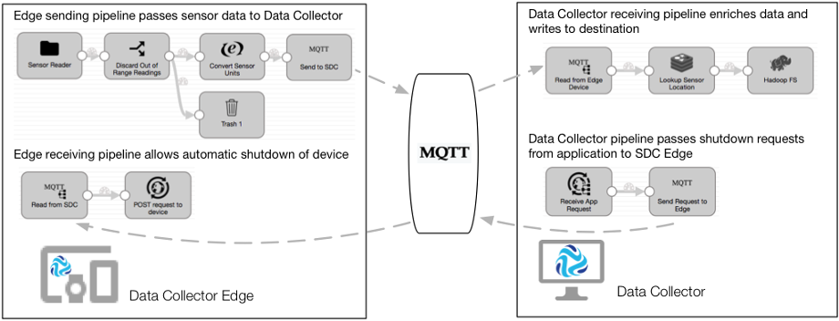

Let's say that you have a factory with a network of machine tools. Sensors are installed
on each machine that measure the temperature, relative humidity, and pressure of the
machine. You need to continuously monitor this sensor data, and shut down any machine that
exceeds the allowed limits.
You design one set of pipelines to collect and enrich the sensor data, and then write the
data to HDFS where a third-party application analyzes and evaluates the data. You design
another set of pipelines to read the results from the third-party application and shut
down the machine tool if needed.
The following pipelines work together to perform the preventative maintenance on the machines:
- Edge sending pipeline
- The edge sending pipeline runs on the SDC Edge installed on each machine tool. It includes a Directory origin that reads
the sensor measurements written to log files on the machine. The pipeline
performs minimal processing - using a Stream Selector to discard out of
range readings and an Expression Evaluator to convert the sensor units of
measurement. The pipeline includes an MQTT Publisher destination that sends
the data to a topic named "sensorReadings" on the MQTT broker. Each pipeline
running on each machine sends the data to the same topic.
- Data Collector receiving pipeline
- The Data Collector receiving pipeline runs on Data Collector installed on a server. It includes an MQTT Subscriber origin that reads
the sensor measurements from the "sensorReadings" topic on the MQTT broker
that all edge sending pipelines publish data to. The pipeline uses a Redis
Lookup processor to look up the sensor location by the sensorID field. It
then writes the enriched data to HDFS.
- A third-party application analyzes the data written to HDFS. The application
determines if sensor measurements have exceeded the allowed limits and then
sends an HTTP POST request to an HTTP endpoint to shut down the
machine.
- Data Collector pipeline
- To read the requests from the third-party application, another Data Collector pipeline runs on the same Data Collector. It includes an HTTP Server origin that listens for HTTP POST requests on
the HTTP endpoint used by the third-party application. The pipeline uses the
MQTT Publisher destination to write the data to a topic on the MQTT broker.
The destination uses the ${record:attribute('sensorID')}
function to define the topic name by the sensorID field.
- Edge receiving pipeline
- To allow the automatic shutdown of the edge devices, each SDC Edge installed on each machine tool also runs an edge receiving pipeline. The
edge pipeline includes an MQTT Subscriber origin that listens to the sensor
ID topic written to by the Data Collector pipeline. The edge pipeline uses an HTTP Client destination to send the
POST request to an HTTP resource URL, instructing the machine to shut itself
down.
The following image displays how the edge and Data Collector
pipelines work together to perform IoT preventative maintenance:
